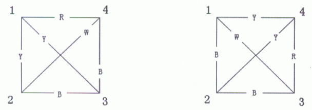

如果一张无向完全图（完全图就是任意两个不同的顶点之间有且仅有一条边相连）的每条边都被染成了一种颜色，我们就称这种图为有色图。如果两张有色图有相同数量的顶点。而且经过某种定点编号的重排，能够是的两张图对应的边的颜色是一样的，我们就称这两张有色图是同构的。以下两张图就是同构的，因为假如你把第一张图的顶点（1，2，3，4）置换成第二张图的（4，3，2，1），就会发现它们是一样的。

你的任务是，对于计算所有顶点数为 $n$，颜色种类不超过 $m$ 的图，最多有几张是两两不同构的图。由于最后的答案会很大，你只要输出结论模 $p$ 的余数就可以了（$p$ 是一个质数）。
 Comet OJ
Comet OJ